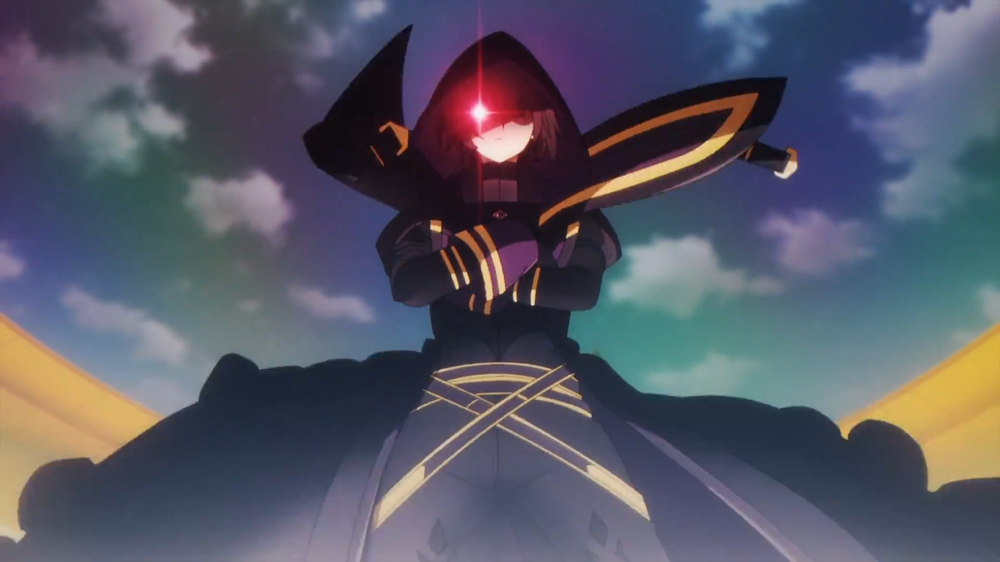

Personal Favorites
My favorite color is Purple, and I usually spend my free time driving or playing games.
Music & Games
I listen to a lot of sad rap, mostly Yatta Bandz and Juice WRLD. For games, I'm usually on Roblox (FF2) or Fortnite.
About Anime
Solo Leveling
A world where hunters battle monsters. The main character goes from the weakest to the strongest through a secret leveling system.
The Eminence in Shadow
One of my top favorites. It's about a protagonist who wants to act as a mastermind from the shadows.
Jujutsu Kaisen
A story about high school students who have Cursed Energy to fight against Curses that threaten humanity.
Anime I've Watched
I've seen a ton of shows, including Solo Leveling, Jujutsu Kaisen, One Punch Man, Sword Art Online, and Classroom of the Elite. Lately, I've been into Frieren and Fire Force.
Scroll through the list below to see some of the shows I've finished:
* = Not Yet Finished
- One Punch Man*
- Jujutsu Kaisen
- My Love Story with Yamada-kun at Lv999
- Yamada-kun and the Seven Witches
- Shikimori's Not Just a Cutie
- Fire Force
- The Misfit of Demon King Academy*
- The Eminence in Shadow
- Solo Leveling
- Sword Art Online*
- That Time I Got Reincarnated As a Slime
- WindBreaker
- The Daily Life of the Immortal King
- Rascal Does Not Dream of Bunny Girl Senpair
- Erased
- Classroom of the Elite
- Frieren
- Mechanical Marie
- The Devil Is A Part-Timer!*
- The Flagrant Flower Blooms With Dignity
- Hell's Paradise
- Devil May Cry
